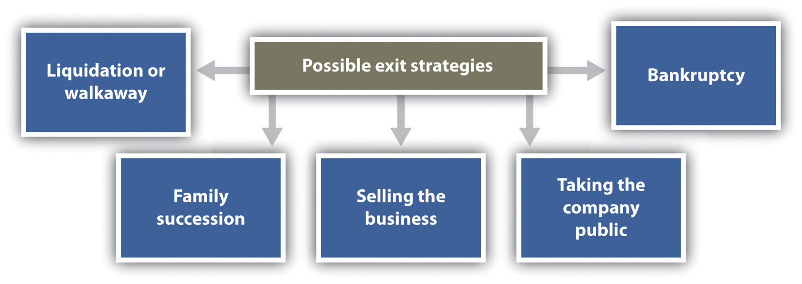
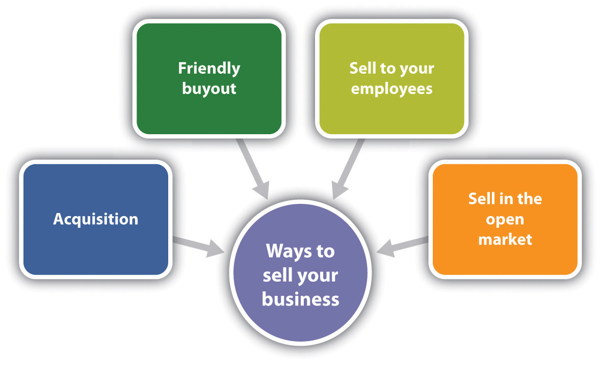

The most emotional topic a small business owner will face while building a business—and the hardest decision to make—is when and how to exit the business. This very personal decision should be considered while building the business because this decision will impact many other decisions made along the way.Timothy Faley, “Making Your Exit,” Inc., March 1, 2006, accessed February 6, 2012, www.inc.com/resources/startup/articles/20060301/tfaley.html. Ultimately, however, an exit strategy must be developed whether or not it is considered along the way. The strategy should be developed early in the business, and it should be reviewed and changed periodically because conditions change. Unfortunately, many small business owners have no exit strategy. This will make an already very emotional decision and process even more difficult.
There are many exit strategies that a small business owner can consider. Liquidation or walk away, family succession, selling the business, bankruptcy, and taking the company public are discussed here. Selecting an exit strategy is important because the way in which an owner exits can affect the following:“Consider Your Exit Strategy When Starting Up: Why You Need an Exit Strategy,” Business Link, accessed February 6, 2012, www.businesslink.gov.uk/bdotg/action/detail?itemId=1073792644&type=RESOURCES.
Figure 14.4 Possible Exit Strategies
The best exit strategy (see Figure 14.4 "Possible Exit Strategies") is the one that is the best match to a small business and the owner’s personal and professional goals. The owner must first decide what he or she wants to walk away with—for example, money, management control, or intellectual property. If interested only in money, selling the business on the open market or to another business may be the best choice. If, on the other hand, one’s legacy and seeing the small business continue are important, family succession or selling the business to the employees might be a better solution.Susan Ward, “Exit Strategies for Your Small Business,” About.com, accessed June 1, 2012, sbinfocanada.about.com/od/businessplanning/a/exitstrategies.htm.
There are times when a small business owner may decide that enough is enough, so he or she simply calls it quits, closes the business doors, and calls it a day.Stever Robbins, “Exit Strategies for Your Business,” Entrepreneur, June 27, 2005, accessed February 6, 2012, www.entrepreneur.com/article/78512. This happens all the time, to hundreds of businesses every day—for example, a small shop, a restaurant, a small construction company, a shoe store, a gift shop, a consignment shop, a nail salon, a bakery, or a video store.Andrew Clarke, “Exit Strategies for Small Business Owners,” Experts.com, 2006, accessed February 6, 2012, www.experts.com/Articles/Exit-Strategies-for-Small -Business-Owners-By-Andrew-Clarke. This closing of the business involves liquidationThe sale of a business’s assets., the selling of all assets. If all debts are paid, it can also be referred to as a walkawayA small business that is closed with all debts paid..
To make any money with the liquidation exit strategy, a business must have valuable assets to sell—for example, land or expensive equipment. The name of the business may have some value, so it could be purchased by someone for pennies on the dollar and restarted with different owners. There is also a possibility that there may be a substantial amount of goodwill or even badwill if a business has been around for a long time. GoodwillAn intangible asset that reflects the value of intangible assets, such as a strong brand name, good customer relations, good employee relations, patents, intellectual property, the size and the quality of the customer list, and market penetration. is an intangible asset that reflects the value of intangible assets, such as a strong brand name, good customer relationships, good employee relationships, patents, intellectual property, size and quality of the customer list, and market penetration.“Goodwill,” Investopedia, accessed February 6, 2012, www.investopedia.com/terms/g/goodwill.asp. However, if a business is simply closed, the value of the goodwill will drop, and the selling price will be lower than it would have been prior to the business being closed.Andrew Clarke, “Exit Strategies for Small Business Owners,” Experts.com, 2006, accessed February 6, 2012, www.experts.com/Articles/Exit-Strategies-for-Small -Business-Owners-By-Andrew-Clarke.
BadwillThe negative effect felt by a company when it is found out that a company has done something not in accord with good business practices. is the negative effect felt by a company when it is found out that a company has done something not in accord with good business practices. Although badwill is typically not expressed in a dollar amount, it can result in such things as decreased revenue; the loss of clients, customers, and suppliers; the loss of market share; the loss of credit; federal or state indictments for crimes committed, and censure by the community.“Badwill,” Investopedia, accessed February 6, 2012, www.investopedia.com/terms/b/badwill.asp. For the small business owner who wants to close under these circumstances, there will be nothing much to sell but tangible assets because the business will have very little, if any, market value.
In all instances of liquidation, the proceeds from the sale of assets must first be used to repay creditors. The remaining money is divided among the shareholders (if any), the partners (if any), and the owner.Stever Robbins, “Exit Strategies for Your Business,” Entrepreneur, June 27, 2005, accessed February 6, 2012, www.entrepreneur.com/article/78512. In an ideal walkaway situation, the following occurs:Jerome A. Katz and Richard P. Green, Entrepreneurial Small Business (New York: McGraw-Hill Irwin, 2009), 663.
The walkaway is the cleanest and best way to exit, but it is not always possible for all businesses that decide to close their doors. There will, of course, always be those instances in which the owner closes the business and takes off, leaving a mess behind.
Any small business owner thinking about liquidation should consider the pros and cons, which are as follows:Andrew Clarke, “Exit Strategies for Small Business Owners,” Experts.com, 2006, accessed February 6, 2012, www.experts.com/Articles/Exit-Strategies-for-Small -Business-Owners-By-Andrew-Clarke; Stever Robbins, “Exit Strategies for Your Business,” Entrepreneur, June 27, 2005, accessed February 6, 2012, www.entrepreneur.com/article/78512.
Pros
Cons
Many small business owners dream of passing the business to a family member. Keeping the business in the family allows the owner’s legacy to live on, which is clearly an attractive option. Family succession as an exit strategy also allows the owner an opportunity to groom the successor; the owner might even retain some influence and involvement in the business if desired.Susan Ward, “Exit Strategies for Your Small Business,” About.com, accessed February 6, 2012, sbinfocanada.about.com/od/businessplanning/a/exitstrategies.htm. However, given that very few family firms survive beyond the first generation and even fewer survive into the third generation,Sue Birley, “Succession in the Family Firm: The Inheritor’s View,” Journal of Small Business Management 24, no. 3 (1986): 36–43; Manfred F. R. Kets de Vries, “The Dynamics of Family Controlled Firms: The Good News and the Bad News,” Organizational Dynamics 21, no. 3 (1993), 59–68; Michael H. Morris, Roy O. Williams, Jeffrey A. Allen, and Ramon A. Avila, “Correlates of Success in Family Business Transitions,” Journal of Business Venturing 12 (1997): 385–401. successionPassing the business to the next generation. is the most critical issue facing family firms.Wendy C. Handler, “Succession in Family Business: A Review of the Literature,” Family Business Review 7, no. 2 (1994): 133–57. Succession is the transference of leadership from one generation to the next to ensure continuity of family ownership of the business.Stanley M. Davis, “Entrepreneurial Succession,” Administrative Science Quarterly 13 (1968): 402–16, as cited in A. Bakr Ibrahim, Khaled Soufani, Panikkos Poutziouris, and Jose Lam, “Qualities of an Effective Successor: The Role of Education and Training,” Education and Training 46, no. 8/9 (2004): 474–80.
A sudden decision to hand over the business to a family member is unwise. The owner will be burdened with problems that will likely lead to business failure. Succession in family firms is a multistage, complex process that should begin even before the heirs enter the business, and effects extend beyond the point in time when they are named as successors. Many factors are involved, and the succession should evolve over a long period of time.A. Bakr Ibrahim, Khaled Soufani, Panikkos Poutziouris, and Jose Lam, “Qualities of an Effective Successor: The Role of Education and Training,” Education and Training 46, no. 8/9 (2004): 474–80; Katiuska Cabrera-Suarez, “Leadership Transfer and the Successor’s Development in the Family Firm,” The Leadership Quarterly 16 (2005): 71–96. Further, because succession is usually followed by changes in the organization, particularly the change in the top position, it is thought to be an indicator of the future of the business. The better prepared and committed the successor is, the greater the likelihood of a successful succession process and business.Katiuska Cabrera-Suarez, “Leadership Transfer and the Successor’s Development in the Family Firm,” The Leadership Quarterly 16 (2005): 71–96. The quality of interpersonal relationships, successors’ expectations, and the role of the predecessor are also relevant to success.Katiuska Cabrera-Suarez, “Leadership Transfer and the Successor’s Development in the Family Firm,” The Leadership Quarterly 16 (2005): 71–96.
The ideal is for the family business to have engaged in formal succession planningPlanning for the family business to be transferred to a family member or members.: planning for the family business to be transferred to a family member or members. The failure to plan for succession is seen as a fundamental human resource problem as well as the primary cause for the poor survival rate of family businesses.A. Bakr Ibrahim, Khaled Soufani, Panikkos Poutziouris, and Jose Lam, “Qualities of an Effective Successor: The Role of Education and Training,” Education and Training 46, no. 8/9 (2004): 474–80. Unfortunately, a very small percentage of family businesses plan appropriately for succession, and those that do frequently have mental, not written, plans.Stephan van der Merwe, Elmarie Venter, and Suria M. Ellis, “An Exploratory Study of Some of the Determinants of Management Succession Planning in Family Businesses,” Management Dynamics 18, no. 4 (2009): 2–17. A discussion of succession planning is in Chapter 3 "Family Businesses".
How to Pass On a Family Business
(click to see video)The owner of the Casanova Restaurant in Carmel, California, talks about his business and his hopes of passing it on to his children.
Feeling the need to file for bankruptcy is a tough pill for any small business owner to swallow. BankruptcyAn extreme form of business termination that uses a legal method for closing a business and paying off creditors when a business is failing and the debts are substantially greater than the assets. is an extreme form of business termination that uses a legal method for closing a business and paying off creditors when the business is failing and the debts are substantially greater than the assets.Jerome A. Katz and Richard P. Green, Entrepreneurial Small Business (New York: McGraw-Hill Irwin, 2009), 663. Because bankruptcy is a complicated legal process, it is important to get an attorney involved as soon as possible. There may be options other than bankruptcy, and consulting with an attorney will help. The owner must understand how bankruptcy works and the options that are available. It is also good to know that not all bankruptcies are voluntary; creditors can petition the court for a business to declare bankruptcy.“Bankruptcy,” US Small Business Administration, accessed February 6, 2012, www.sba.gov/content/bankruptcy.
Chapter 7 small business bankruptcy, more commonly referred to as liquidation, is appropriate when a business is failing, has no future, and has no substantial assets. This form of bankruptcy makes sense only if the owner wants to walk away. It is particularly suited to sole proprietorships and other small businesses in which the business is essentially an extension of its owner’s skills.Caron Beesley, “Bankruptcy Options for the Small Business Owner,” AllBusiness.com, February 5, 2009, accessed February 6, 2012, www.allbusiness.com/company-activities-management/company-structures-ownership/11772426-1.html; “Small Business Bankruptcy…You Have Choices,” Daniel B. James Group, accessed February 6, 2012, www.small-business-bankruptcy.com. Under Chapter 7 bankruptcy law, a trustee will take a business apart, selling assets to satisfy outstanding debts and discharging debts that cannot be satisfied with the assets that are available.Caron Beesley, “Bankruptcy Options for the Small Business Owner,” AllBusiness.com, February 5, 2009, accessed February 6, 2012, www.allbusiness.com/company-activities-management/company-structures-ownership/11772426-1.html; “Small Business Bankruptcy…You Have Choices,” Daniel B. James Group, accessed February 6, 2012, www.small-business-bankruptcy.com.
Chapter 11 small business bankruptcy allows an owner to run a business with court oversight. The owner loses control of the firm, but it continues to operate. The owner is protected from creditors in the short term because the court orders an automatic stay that prevents the creditors from seizing your assets. Unfortunately, the outcome is not pleasant. The owner is out as manager, and the creditors end up owning the business. If the owner cannot pay the $75,000+ in legal fees, the judge will probably order liquidation, so the result is the same as a Chapter 7.“Small Business Bankruptcy…You Have Choices,” Daniel B. James Group, accessed February 6, 2012, www.small-business-bankruptcy.com. This form of bankruptcy applies to sole proprietorships, corporations, and partnerships.Caron Beesley, “Bankruptcy Options for the Small Business Owner,” AllBusiness.com, February 5, 2009, www.allbusiness.com/company-activities-management/company-structures-ownership/11772426-1.html.
The amount that creditors can collect will depend on how a business is structured. If a business is a sole proprietorship, the owner’s personal assets may be used to pay off business debts, depending on the chosen bankruptcy option. If a business is a corporation, a limited liability company, or some form of a partnership, the owner’s personal assets are protected and cannot be used to pay off business debts.“Bankruptcy,” US Small Business Administration, accessed February 6, 2012, www.sba.gov/content/bankruptcy.
Instead of going the bankruptcy route, a small business owner could do the following things:“Small Business Bankruptcy…You Have Choices,” Daniel B. James Group, accessed February 6, 2012, www.small-business-bankruptcy.com.
An initial public offering (IPO)A stock offering in which the owner or owners of equity in the formerly private company have their private holdings transferred into issues tradable on public markets. is a stock offering in which the owner or owners of equity in a formerly private company have their private holdings transferred into issues tradable in public markets, such as the New York Stock Exchange (NYSE).Timothy Faley, “Making Your Exit,” Inc., March 1, 2006, accessed February 6, 2012, www.inc.com/resources/startup/articles/20060301/tfaley.html. From the initial owners’ perspective, an IPO is often seen as liquidation, but it is also a money event for a company. For this reason, an IPO makes sense only if a small business can benefit from a substantial infusion of cash.Timothy Faley, “Making Your Exit,” Inc., March 1, 2006, accessed February 6, 2012, www.inc.com/resources/startup/articles/20060301/tfaley.html.
IPOs receive lots of press, even though they are really very rare. In a typical year, there may be 200 IPOs, perhaps even less. Consider the following data:“IPOs in 2011,” Upcoming-IPOs.com, August 23, 2011, accessed February 6, 2012, upcoming-ipos.com/ipos-in-2011; Trent Tillman, “2010 Year-End U.S. IPO Review and 2011 Outlook,” Syndicate Trader, March 4, 2011, accessed February 6, 2012, syndicatetrader.wordpress.com/2011/03/04/2010-year-end-u-s-ipo-review-and-2011 -outlook.
Why are the numbers so small?Andrew Clarke, “Exit Strategies for Small Business Owners,” Experts.com, 2006, accessed February 6, 2012, www.experts.com/Articles/Exit-Strategies-for-Small -Business-Owners-By-Andrew-Clarke. The IPO process is costly, labor intensive, and usually requires an up-front investment of more than $100,000. Detailed reports are required on a business’s financials, staffing, marketing, operations, management, and so forth. Preparing these reports typically costs hundreds of thousands of dollars, sometimes millions, every year. The Sarbanes-Oxley Act alone, a product of the Enron scandal, costs even the smallest companies several hundred thousands of dollars in consulting fees. Lastly, many companies are not valued very highly on the stock market.
When thinking about an IPO, consider the following pros and cons:Stever Robbins, “Exit Strategies for Your Business,” Entrepreneur, June 27, 2005, accessed February 6, 2012, www.entrepreneur.com/article/78512.
Pros
Cons
Stever Robbins of Entrepreneur paints an amusing but very dismal picture of what is actually involved in an IPO.Stever Robbins, “Exit Strategies for Your Business,” Entrepreneur, June 27, 2005, accessed February 6, 2012, www.entrepreneur.com/article/78512.
You start by spending millions just preparing for the road show, where you grovel to convince investors your stock should be worth as much as possible…Unlike an acquisition, where you craft a good fit with a single suitor, here you are romancing hundreds of Wall Street analysts. If the romance fails, you’ve blown millions. And if you succeed, you end up married to the analysts. You call that a life?
Once public, you bow and scrape to the analysts. These earnest 28-year-olds—who haven’t produced anything of value since winning their fifth grade limerick contest—will study your every move, soberly declaring your utter incompetence at running the business you’ve built over decades. It’s one thing to receive this treatment from your loving spouse. It’s quite another to receive it from Smith Barney.
We won’t even talk about the need to conform to Sarbanes-Oxley, or the 6 percent underwriting fees you’ll pay to investment bankers, or lockout periods, or how markets can tank your wealth despite having a healthy business, or how IPO-raised funds distort your income statement, or…
In short, IPOs are not only rare, they’re a pain in the backside. They make the headlines in the very, very rare cases that they produce 20-year-old billionaires. But when you’re founding [and running] your company, consider them just one of many exit strategies. Realize that there are a lot of ways to skin a cat, and just as many ways to get value out of your company. Think ahead, surely, but do it with sanity and gravitas. And if you find yourself tempted to start looking for more office space in preparation for your IPO in 18 months, call me first. I’ll talk you down until the paramedic arrives.
For some small businesses, although not many, an IPO might make sense—and may even be necessary. For most, however, an IPO is clearly not a viable exit strategy.
Another possible exit strategy is selling the business. Although the sale of a business is sometimes described as the end of entrepreneurship or as failure or defeat,J. G. Pellegrin, “Toward a Model of Making and Executing the Decision to Sell: An Exploratory Study of the Sale of Family Owned Companies” (PhD diss.), Lausanne Business School, Switzerland, 1999, as cited in Christian Niedermeyer, Peter Jaskiewicz, and Sabine B. Klein, “’Can’t Get to Satisfaction?’ Evaluating the Sale of the Family Business from the Family’s Perspective and Driving Implications for New Venture Activities,” Entrepreneurship & Regional Development 22, no. 3–4 (2010): 293–320. selling the business can also be a relief and the beginning of the next phase of the owner’s personal and professional life. As in the case of SoBe (highlighted at the beginning of this chapter), the owners sold the business because, among other things, it was becoming something they did not want it to be—and it was no longer fun. Whatever the reason, an owner can sell a business only once, so be sure that it is the right exit strategy. The owner should address the following questions:Barbara Taylor, “How to Sell Your Business,” New York Times, January 7, 2010, accessed February 6, 2012, www.nytimes.com/2010/01/07/business/smallbusiness/07guide.html; Anthony Tjan, “The Founder’s Dilemma: To Sell or Not to Sell?,” Harvard Business Review, February 18, 2011, accessed February 6, 2012, blogs.hbr.org/tjan/2011/02/the-founders-dilemma-to-sell-o.html.
It is recommended that an owner start planning for a sale at least three to four years in advance. Sometimes, even five years is not long enough. It is very easy to become overly attached to a business, so it will be difficult to see how the business really looks to an outsider.Andrew Clarke, “Exit Strategies for Small Business Owners,” Experts.com, 2006, accessed February 6, 2012, www.experts.com/Articles/Exit-Strategies-for-Small -Business-Owners-By-Andrew-Clarke. Selling a business is an art and a science. If the asking price is too high, this may signal to potential buyers that the owner is not really interested in selling. Because there are several methods used to value a business, it is a good idea to hire a professional.Barbara Taylor, “How to Sell Your Business,” New York Times, January 7, 2010, accessed February 6, 2012, www.nytimes.com/2010/01/07/business/smallbusiness/07guide.html.
There are different ways to sell a business (see Figure 14.5 "Four Ways to Sell a Small Business"). Acquisition, friendly buyout, selling to the employees, and selling on the open market are discussed here. Be aware, however, that if a business is floundering and it is well known that the business is having major problems paying bills, vulture capitalistsA venture capitalist who invests in floundering firms in the hope that they will turn around. might start circling. A vulture capitalist is a venture capitalistIndividuals who provide money for start-up businesses or additional capital for a business to grow. They invest to make not only a profit but also returns that are substantially greater than those found in the market. who invests in floundering firms in the hope that they will turn around.“Vulture Capitalist,” Investopedia, accessed February 6, 2012, www.investopedia.com/terms/v/vulturecapitalist.asp; “Vulture Capitalist,” Urban Dictionary, November 12, 2009, accessed February 6, 2012, www.urbandictionary.com/define.php ?term=Vulture%20Capitalist. A venture capitalist is an investor who either provides capital to start-up ventures or supports small companies to expand but does not have access to public funding. Venture capitalists typically expect higher returns because they are taking additional risks.“Venture Capitalist,” Investopedia, accessed February 6, 2012, www.investopedia.com/terms/v/venturecapitalist.asp.
Figure 14.5 Four Ways to Sell a Small Business
When one business buys another business, as in the case of Pepsi buying SoBe, it is called an acquisitionWhen another business buys a business.. Businesses buy other businesses for all kinds of reasons—for example, as a quick path to expansion or diversification or to get rid of the competition. When Pepsi was considering acquiring SoBe, their first thought was to kill the brand. But the bottlers convinced them otherwise, saying that it was a very strong brand.Interview with John Bello, cofounder of SoBe, August 23, 2011.
Acquisition is one of the most common exit strategies for a small business. One key to success is to target the potential acquirer(s) in advance, position the business accordingly, and convince the acquirer that the small business is worth the asking price.Susan Ward, “Exit Strategies for Your Small Business,” About.com, accessed February 6, 2012, sbinfocanada.about.com/od/businessplanning/a/exitstrategies.htm. Another way to become the target of an acquisition is to be successful in the marketplace. This happened with SoBe. Coca-Cola, Pepsi, Arizona, and Campbell’s all expressed an interest after SoBe became a national brand. Pepsi ended up being the acquirer in the end.Interview with John Bello, cofounder of SoBe, August 23, 2011.
In an acquisition, the owner negotiates the price—a good thing because public markets value a business relative to its industry, which limits the value of a business. In an acquisition, however, there is no limit on the perceived value of a company. Why? The person making the acquisition decision is rarely the owner of the acquiring company, so there is no problem with the checkbook. It is someone else’s money.
When thinking about an acquisition, consider the following pros and cons:
ProsStever Robbins, “Exit Strategies for Your Business,” Entrepreneur, June 27, 2005, accessed February 6, 2012, www.entrepreneur.com/article/78512.
ConsStever Robbins, “Exit Strategies for Your Business,” Entrepreneur, June 27, 2005, accessed February 6, 2012, www.entrepreneur.com/article/78512.
A friendly buyoutThe transfer of ownership to family members, customers, employees, children, or friends. occurs when ownership is transferred to family members, customers, employees, current managers, children, or friends. It is still considered selling the business, but the terms and nature of the transaction are usually very different. No matter who the “friendly” buyer may be, figure on starting to plan early—and engage a professional before, during, and after the sale.Andrew Clarke, “Exit Strategies for Small Business Owners,” Experts.com, 2006, accessed February 6, 2012, www.experts.com/Articles/Exit-Strategies-for-Small -Business-Owners-By-Andrew-Clarke; Stever Robbins, “Exit Strategies for Your Business,” Entrepreneur, June 27, 2005, accessed February 6, 2012, www.entrepreneur.com/article/78512.
When thinking about friendly buyout, consider the following pros and cons:
ProsAndrew Clarke, “Exit Strategies for Small Business Owners,” Experts.com, 2006, accessed February 6, 2012, www.experts.com/Articles/Exit-Strategies -for-Small-Business-Owners-By-Andrew-Clarke; Stever Robbins, “Exit Strategies for Your Business,” Entrepreneur, June 27, 2005, accessed February 6, 2012, www.entrepreneur.com/article/78512.
ConsAndrew Clarke, “Exit Strategies for Small Business Owners,” Experts.com, 2006, accessed February 6, 2012, www.experts.com/Articles/Exit-Strategies-for -Small-Business-Owners-By-Andrew-Clarke; Stever Robbins, “Exit Strategies for Your Business,” Entrepreneur, June 27, 2005, accessed February 6, 2012, www.entrepreneur.com/article/78512.
Selling the business to employees and/or managers is another option to consider. “Arranging an employee buyout can be a win-win situation as they get an established business they know a great deal about already and you get enthusiastic buyers that want to see your business continue to thrive.”Susan Ward, “Exit Strategies for Your Small Business,” About.com, accessed February 6, 2012, sbinfocanada.about.com/od/businessplanning/a/exitstrategies.htm. The owner can accomplish this process by setting up an employee stock option plan (ESOP), a stock equity plan that lets employees buy ownership in the business. However, because the owner is giving control of the business to the employees, a transition plan is critical to make sure that they are ready to carry on the business after the owner leaves. It is a good idea to hire an ESOP specialist. Keep in mind, though, that only corporations are eligible to form an ESOP. An ESOP is expensive to set up and maintain, so this might not be the best choice.Monica Mehta, “Alternative Exits for Business Owners,” Bloomberg BusinessWeek, July 27, 2010, accessed February 6, 2012, www.BusinessWeek.com/smallbiz/content/jul2010/sb20100727_564778.htm.
If an ESOP is not appealing or the business is not eligible to have an ESOP, selling the business could be as simple as having a current employee take it over. The owner could also consider a worker-owned cooperativeInterested employees who become members of a cooperative that buys a business., in which interested employees become members of a cooperative that buys the business.Barbara Taylor, “A Creative Way to Sell Your Business,” New York Times, October 29, 2010, accessed February 6, 2012, boss.blogs.nytimes.com/2010/10/29/a -creative-way-to-sell-your-business. In the case of Select Machine of Brimfield, Ohio, “[the owners] sold 30 percent of their stock to the co-op in the first of several installments. The co-op took out loans in the amount of $324,000, which were personally guaranteed by the sellers. The loans were paid off out of company profits over three years; subsequent installments have been owner-financed. Today the co-op owns 59 percent of the company’s stock, and sale of an additional 10 percent is now on the table.”Barbara Taylor, “A Creative Way to Sell Your Business,” New York Times, October 29, 2010, accessed February 6, 2012, boss.blogs.nytimes.com/2010/10/29/a -creative-way-to-sell-your-business.
For a worker-owned cooperative to work, the business owner(s) must be totally committed to the sale of the business to the employees. It is a good option if the business is small (fewer than twenty-five employees), profitable, relatively debt free, already has a culture of participatory management, and the owners are willing to stay on throughout the transition.Barbara Taylor, “A Creative Way to Sell Your Business,” New York Times, October 29, 2010, accessed February 6, 2012, boss.blogs.nytimes.com/2010/10/29/a -creative-way-to-sell-your-business.
Selling a business on the open market is the most popular exit strategy for small businesses.Susan Ward, “Exit Strategies for Your Small Business,” About.com, accessed February 6, 2012, sbinfocanada.about.com/od/businessplanning/a/exitstrategies.htm. Unfortunately, it has been estimated that 75 percent of US businesses do not sell,Harvey Zemmel, “Top 7 Ways to Maximize Your Exit Strategy for Maximum Profit,” About.com, accessed February 6, 2012, sbinfocanada.about.com/od/sellingabusiness/a/exitstrategyhz.htm. so if this is how the owner wants to sell the business, it must be marketed in a way that maximizes its value in the eyes of a potential buyer.
An owner also needs to spread the word. Most savvy business buyers use the Internet to research available businesses for sale, so post the sale notice on the two largest websites:Barbara Taylor, “A Creative Way to Sell Your Business,” New York Times, October 29, 2010, accessed February 6, 2012, boss.blogs.nytimes.com/2010/10/29/a-creative-way-to-sell-your-business. BizBuySell.com, self-described as the “Internet’s Largest Business for Sale Marketplace,” and BizQuest.com, self-described as the “Original Business for Sale Website.”
Two executives of a regional food company are regular customers and big fans of Frank’s All-American BarBeQue. They recently learned that Frank has been selling his sauces in local grocery stores and have been a big hit. The executives bought jars of each flavor, took them back to their company, and talked to the people who would decide about adding products to their line. Everyone loved the sauces, and there was definite interest in acquiring the sauce-making side of Frank’s business. It would fill a hole in their product line that they had been looking to fill.
The company contacted Frank about its interest, and Frank—with some urging from his son, Robert—is thinking about it. It would provide Frank with a nice retirement (when he decides to do that), money for his son and daughter, and a legacy. How should Frank proceed?